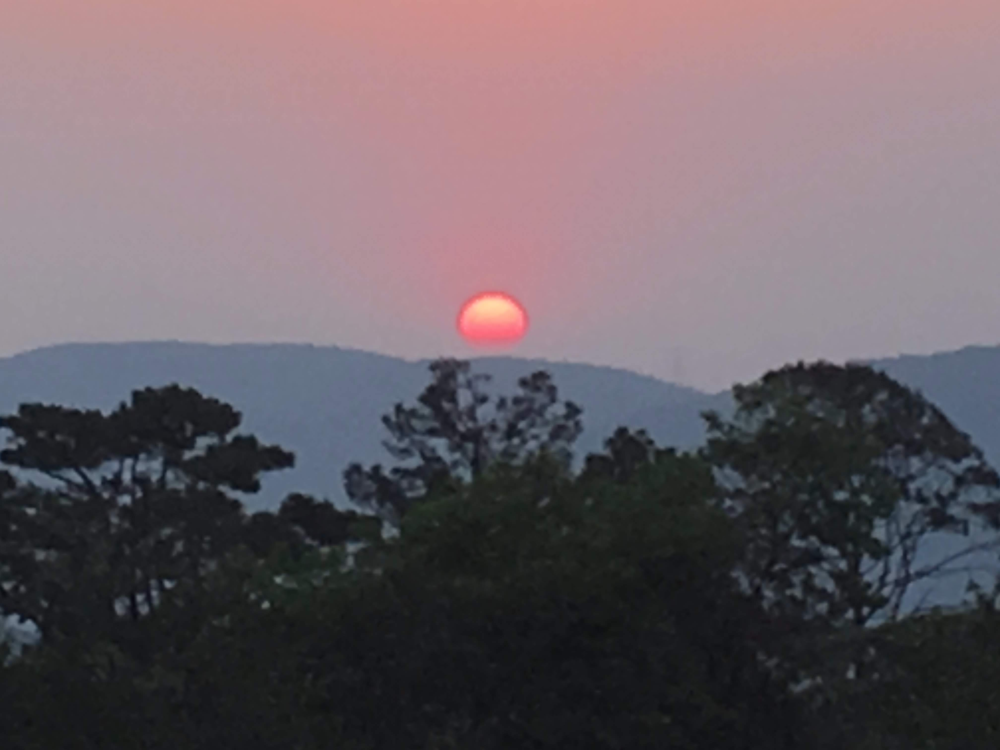

About

Hi! My name is Fabrizio. I am originally from a small town in Brazil called Mairiporã, which means beautiful water of Maíra in Tupi. I have a B.S. in Physics and Mathematics from The University of Chicago.
How I Got Here
Growing up at the heart of the Atlantic Florest meant living aorund thousands of plant and animal species, but it also meant being far from modern infrastructure and services. My house didn't have access to WI-FI untill 2018, when I was 15. I remember 2018 well because it was the year my high-school physics teacher gave me a single volume physics textbook, It was the year I got my first computer, and it was the year that I participated in my first astronomy olympiad.
During the two years that followed, I had the privilege to participate in two international astronomy olympiads. In 2021, I was accepted to The University of Chicago, now my alma mater.
Astrophotography
Object: Omega Centauri
Location: Mairiporã, Brazil
Telescope: 200 mm Newtonian
Object: Mars and Moon
Location: Mairiporã, Brazil
Telescope: 200 mm Newtonian

Object: Saturn
Location: Mairiporã, Brazil
Telescope: 200 mm Newtonian
Underwater Photography
Object: Stingray
Location: Ubatuba, Brazil
Depth: 5m

Object: Mullet Fish
Location: Ubatuba, Brazil
Depth: 0.5m
Object: Starfish
Location: Ubatuba, Brazil
Depth: 3m